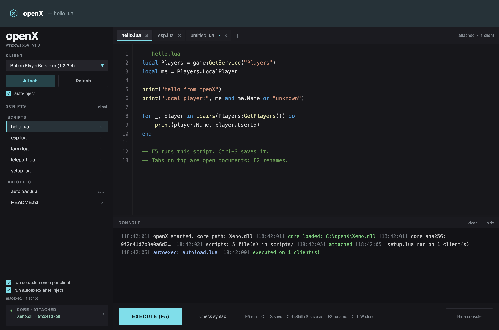
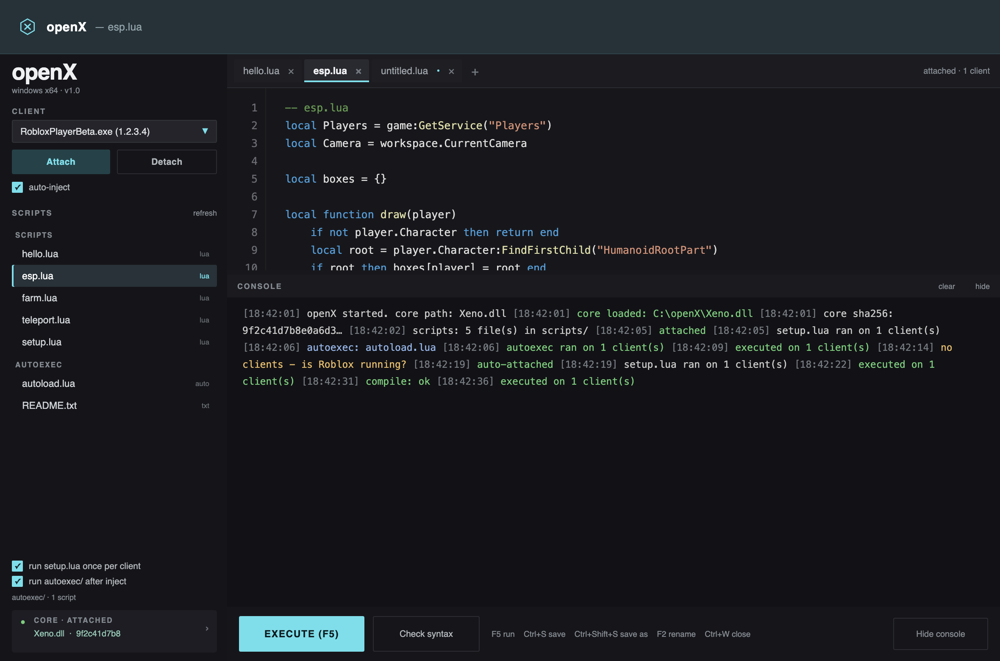
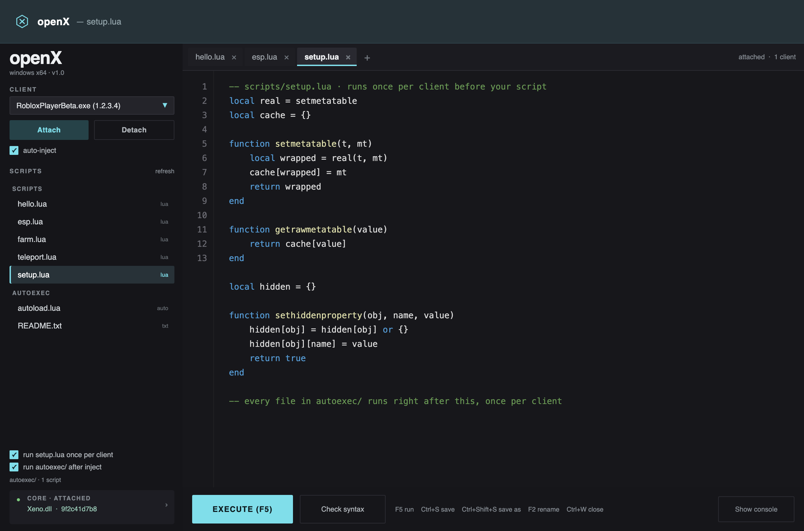

A focused desktop host for the Capi / Xeno.dll executor API. One window, document tabs that behave like a real editor, and a launcher that sets up the runtime for you.
no installer · no telemetry · no bundled core · 4.3 MB
The published Capi package is a 360-line P/Invoke layer whose every download and update endpoint now returns 404. openX keeps the ABI, deletes the dead paths, and puts a real interface on top of it.
Lua lexer, line numbers, a dark palette that doesn't fight the rest of the window. Tabs sit on top: a dot marks unsaved work, F2 renames, Ctrl+W closes.
GetClients feeds a live dropdown. Send to every attached client at once, or pick one by name.
Timestamps, color-coded info / ok / warn / error, and a scrollback you can actually read in a dark room. Dock it under the editor or collapse it.
Polls for clients and attaches when the core is ready. Runs setup.lua, then every autoexec/ script, once per client.
Every load prints the SHA-256 of the DLL it mapped. If the hash changes, you'll see it in the console before a script runs.
One folder: exe, DLLs, scripts/, autoexec/, and a config.ini written on exit. No registry, no install directory.
Tabs are files, not fixed modes — open as many as you want. Rendered from the real WinForms layout: same sizes, same palette, same dock order.



openX.exe is a ~46 KB native Win32 launcher. It needs nothing
installed, which is exactly why it can install what the app needs.
Reads NDP\v4\Full\Release from the registry, 64-bit view.
At 461808 or higher — .NET Framework 4.7.2 — it starts the host immediately, no prompt.
If missing, it asks once, then pulls Microsoft's official offline installer over HTTPS.
Runs it quietly, handles the reboot-required codes, re-checks, then launches.
go.microsoft.com link, not a mirror.Executors are a scene full of promises. Here's the actual list.
Xeno.dll is closed source and not distributable here.Requires Windows 10/11 x64 and a Xeno.dll build you trust. The launcher handles .NET.
openX-1.0-win64.zip · 4.3 MB · no core included · SHA-256
openX.exe. It checks for .NET Framework 4.7.2 and,
if it's missing, asks once before downloading Microsoft's offline installer. Windows 10
1809+ and Windows 11 already include 4.8, so most machines never see the prompt.
Xeno.dll is closed source, and every URL the original
package used for it returns 404. Drop a build you trust next to
openX.host.exe, or click the core chip in the sidebar to
locate it. It is saved as CorePath in
config.ini.
F2, to rename it; the file on disk is renamed too.
Ctrl+S saves, Ctrl+Shift+S saves
a copy, Ctrl+W closes, and Ctrl+Tab
cycles. A dot on the tab means unsaved changes; right-click a tab to jump to any
document in the list.
.lua files in the autoexec
folder next to the exe. After injection, openX runs setup.lua
once, then every autoexec script in filename order, once per client. You can turn it off
with the checkbox in the sidebar.
Execute(). Check with
print(type(loadstring)). If it returns
nil, the DLL didn't expose it and nothing outside the DLL can
put it back.
scripts/setup.lua, and an empty
autoexec/ folder with a README. No core, no installer, no
registry writes.